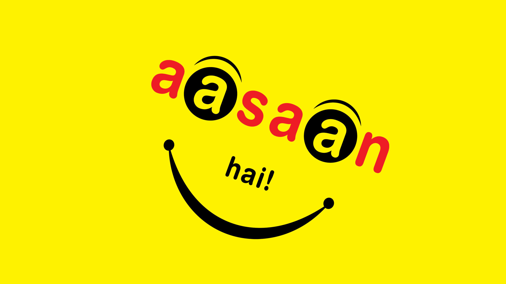

Motivation
Sachin KumarStudent life is a beautiful, yet hectic part of life. People go through all kinds of struggles during this time. As students struggle, they need to hear kind and inspiring words from the people in their life. Send some inspiring, encouraging, and positive messages to students who are suffering. These will help them better prepare themselves for the coming future. Remember that students are the backbone of the nation, and when you inspire them to become more, you build a bright future for the nation. Be humble and teach them to differentiate between good and bad. Help them to find light in their life. Send positive and inspiring messages to students and help them become good humans. Inspire them, guide them, and help them see through your experienced eyes. Study like there’s no tomorrow because if you keep putting off your studies for tomorrow, you’ll probably be too late. Time can be your best friend and your worst enemy depending on whether you use it or waste it.
Everything is: #Aasaan Hai
As a student the most important thing to remember is that laziness is your worst enemy and hard Work is your best friend. Do not focus on what you cannot do; take a look at what you are capable of. You will feel confident and learn new things along your way. Always look for how much progress can be made rather than perfection. Life will be a lot easier. Do not give up no matter what, always try just one more time, and eventually you will be successful. Succeeding in life is easy as long as you believe in yourself. Trust yourself, and success will come along. Remember that every problem is a challenge to prove yourself and a skill to be developed. Try to be an inspiration yourself, and nothing else can take you down. Be an inspiration rather than looking for one.